Technical art highlights
- Raycast interaction with hover highlighting
- Recipe validation & scoring systems in C#
- Moonlit scene lighting with emissive gameplay cues
- Modelled and textured props, boat and bridge
01Overview
River of Forgetting (望乡渡) is a 3D first-person narrative game set in a mythic underworld. You’re Meng Po’s apprentice: she has vanished, leaving a handbook of herbs and recipes, and wandering souls arrive with their final requests. Listen, interpret, and brew the right medicine to guide each soul toward rebirth.
I built it solo in Unity: design, C# systems, and the environment and prop assets that set a moonlit, lantern-lit tone.
02My contributions
Gameplay systems (C#)
Raycast interaction, NPC order queue, cauldron recipe validation, submission and game-progress scoring.
Environment & props
Built the Naihe Bridge scene, boat, furniture, herb boxes and a red spirit tree to set the underworld mood.
Lighting & mood
Moonlit night scene with floating lanterns and emissive herbs for readability in the dark.
Narrative & design
Five NPC stories (burnout, academic pressure, cyberbullying, medical injustice, family conflict) and two endings.
03World & assets

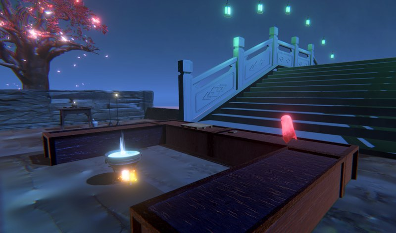
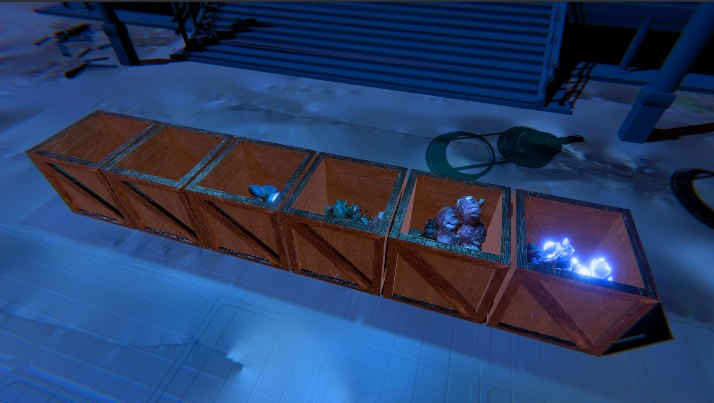
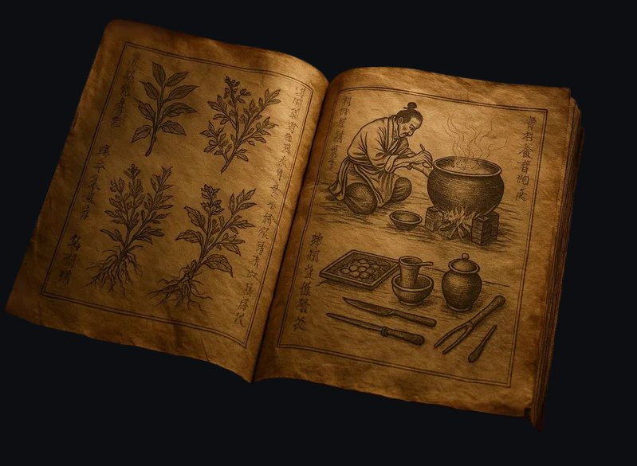
General decorations to set the tone
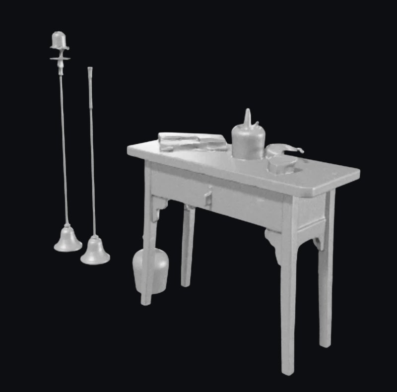
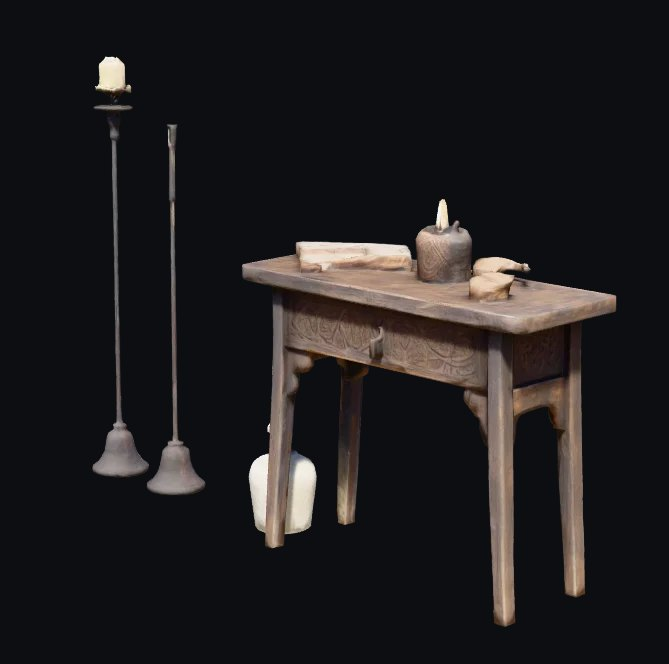
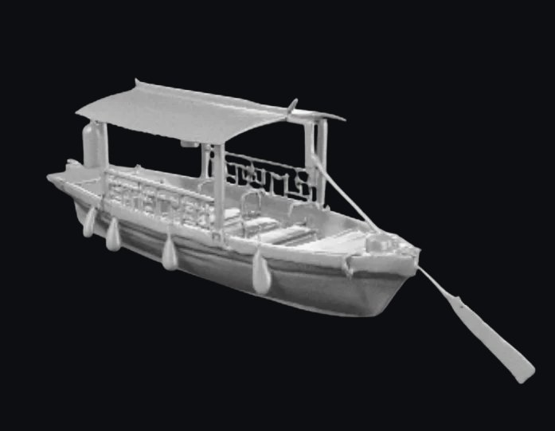
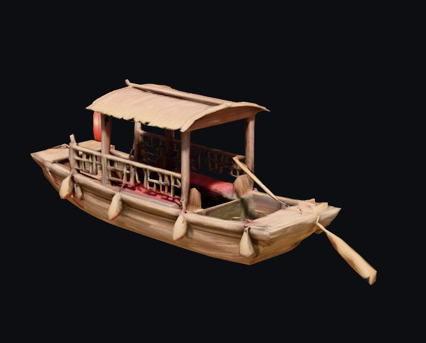
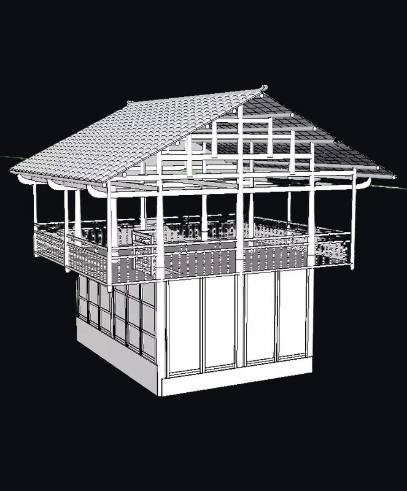
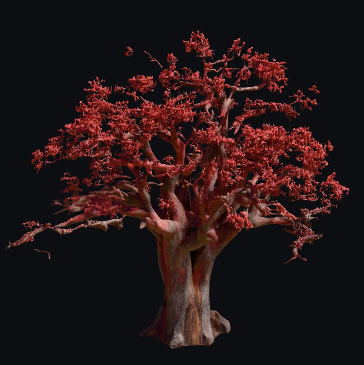
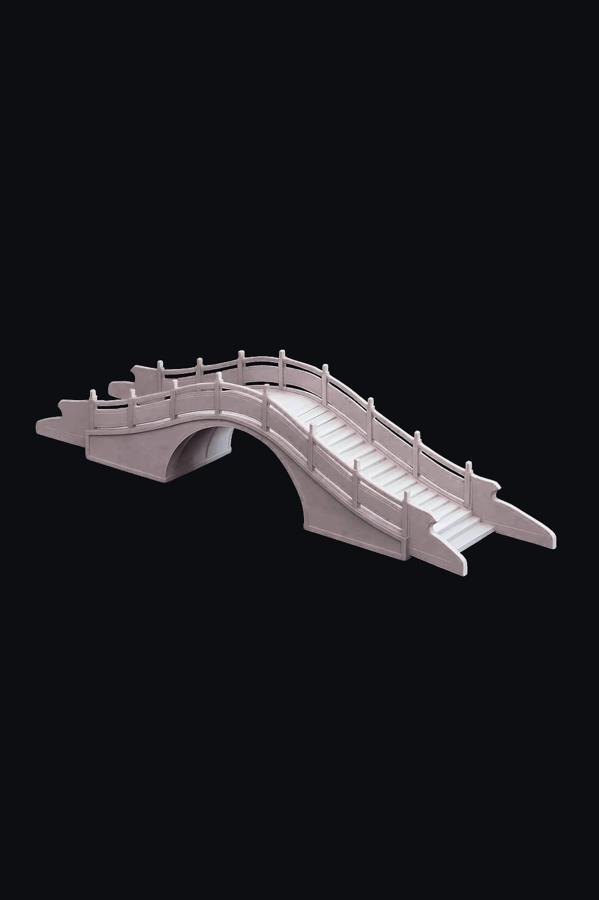
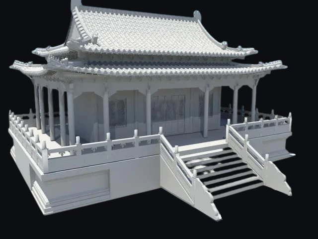
Herbs: the main objects players interact with
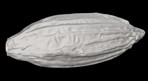
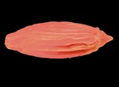
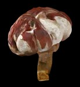
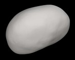
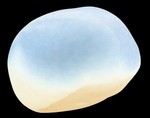
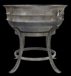
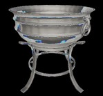
04Systems & code
The core loop is listen → interpret → brew → serve. Each herb has unique effects, so players consult the handbook to match a soul’s need to the right combination.
Interact.csCasts a ray from the camera to highlight items under the cursor. On click, disables physics and attaches the item to the player’s hand.
OrderManager.csActivates NPC orders one at a time after a delay, triggering dialogue plus visual and audio cues when a new order starts.
Cauldron.csCollects ingredients and checks them against recipes. A match spawns a potion with effects. A miss plays a failure sound and shows a hint.
Submit.csDetects a potion entering the serving zone, submits its ingredients to the current NPC for validation, then destroys it.
GameProgressManager.csTracks each NPC’s result. Once all are served it computes accuracy (≥ 60%, 3 of 5) and loads the Peaceful Passage or Lingering Regrets ending.
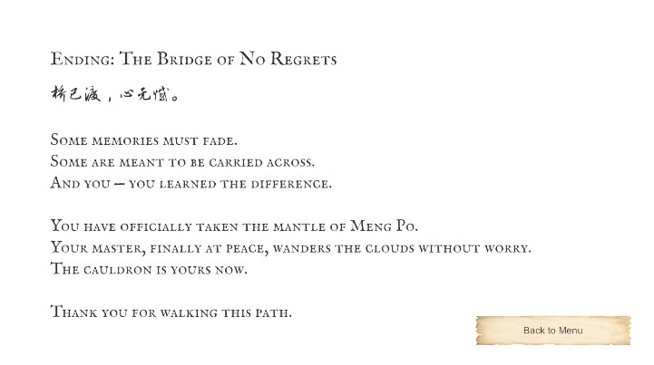
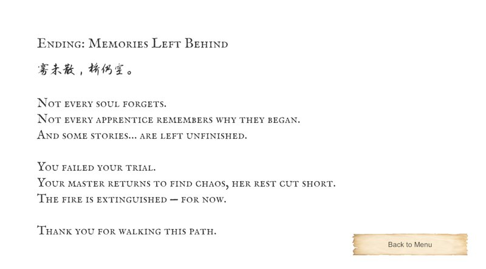
05Challenges & solutions
Readable interaction in a dark scene
The underworld mood needed low light, but players still had to find and grab small herbs.
Highlight on hover + emissive herbs
Interact.cs highlights anything under the cursor, and herb boxes glow so ingredients read against the night palette.
Branching outcomes without complex state
Each soul’s result needed to feed a meaningful ending without a tangle of flags.
Central progress manager
Each submission records correct or incorrect. One manager computes accuracy after the last NPC and picks the ending.
06Inspiration
Structure from Good Coffee, Great Coffee (request → prepare → serve). Crafting from Potion Craft and Wytchwood. Emotional NPCs from Spiritfarer. Serving-while-listening from VA-11 Hall-A. Mood from The Midnight Walk.
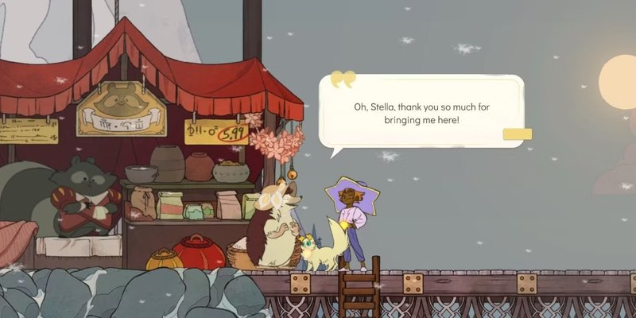
Spiritfarer" width="800" height="400" loading="lazy">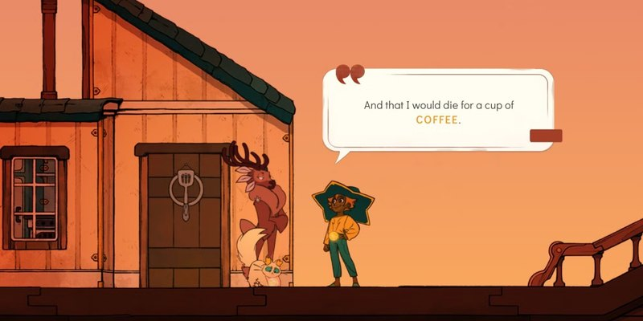
Good Coffee, Great Coffee" width="800" height="400" loading="lazy">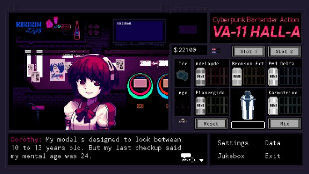
VA-11 Hall-A" width="620" height="349" loading="lazy">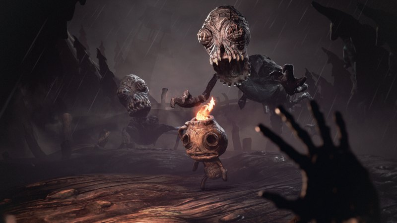
The Midnight Walk" width="800" height="450" loading="lazy">